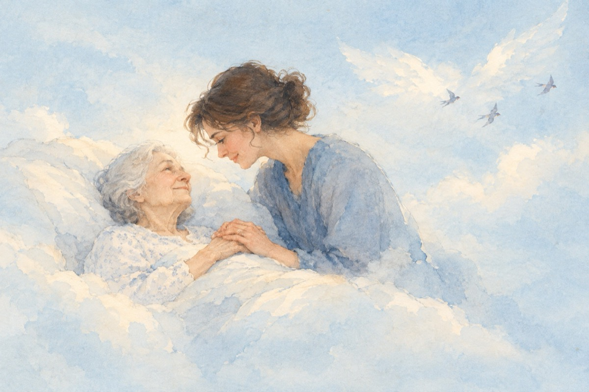

Mamă
Când m-ai născut, tu ai strigat
De-au auzit toți îngerii din cer
Și-n cor, cu bucurie au cântat
Că între ei a mai sosit un înger.
Iar Dumnezeu ce-a plămădit povestea
Zâmbindu-mi m-a blagoslovit
Iar ție, mamă, și femeie, iată, vestea
Un dar dumnezeiesc ți-a dăruit.
Acum la căpătâiul tău de suferință
m-aplec și te-ngrijesc cu drag
Cum ai făcut-o și tu cu credință
Copil fiind de multe ori bolnav.
Acum când misiunea pe pământ tu ți-ai îndeplinit
Te cheamă-n altă parte sus în cer!
Căci viața nu se pierde e la infinit
Doar pe pământ există misterul efemer!
Tu ai plecat, eu mai rămân să-mi termin misiunea
Aceasta-i rânduiala pe pământ
De-acum de ieri de când e lumea
A Dumnezeului zidire și-a lui slăvit cuvânt.
Vasile Groza